Family album
Photos
Grandkids, family gatherings and trips – gathered from the old picture galleries.
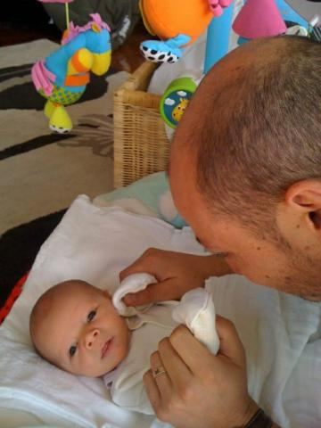
Archie at 5 months

Archie First
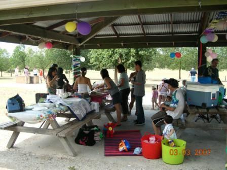
Birthday BBQ
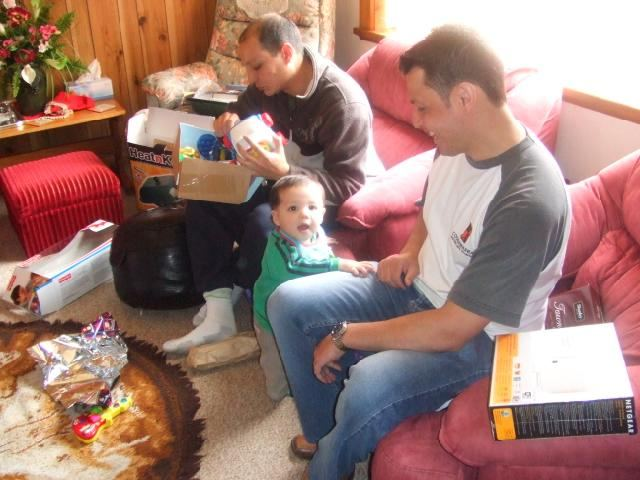
Christmas

December
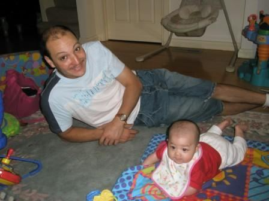
Eleanor at 4 months
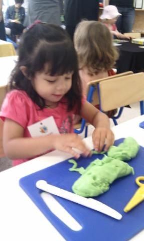
Eleanor at 3
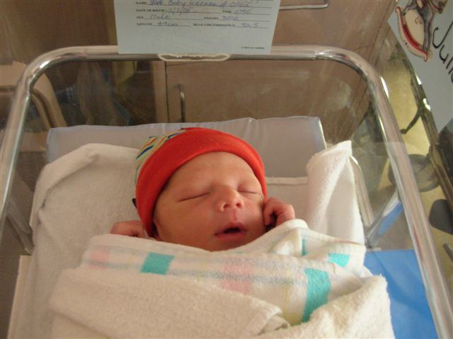
Family and Julian
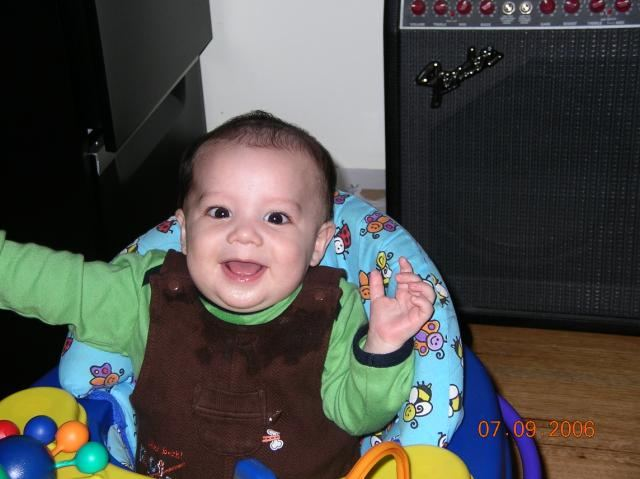
Julian October

Julian at 4

Julian November

Julian 2

Julians Progress
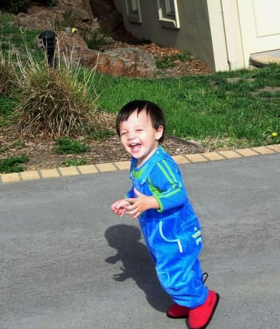
Off to the Playground
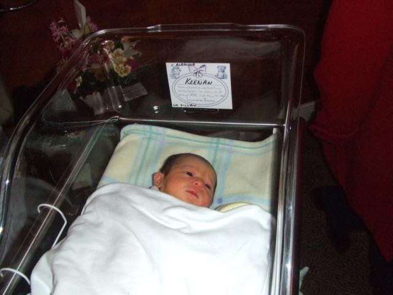
With Uncle John and Grandpa
Archie 2 months
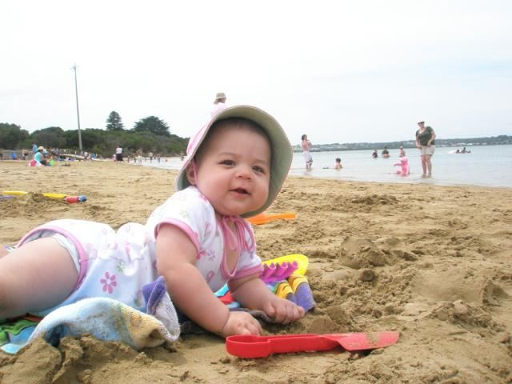
Xmas and Kids at Play

Baby Archie – more photos
Julian
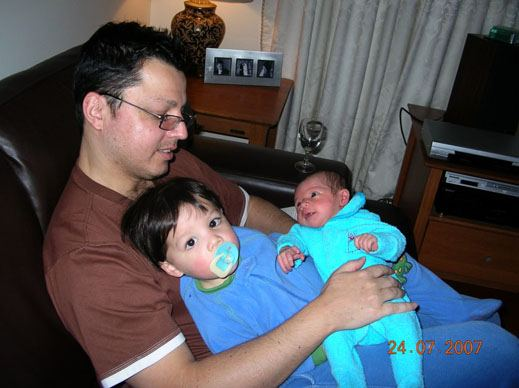
The Keenan boys as babies
Grandkids snapshots
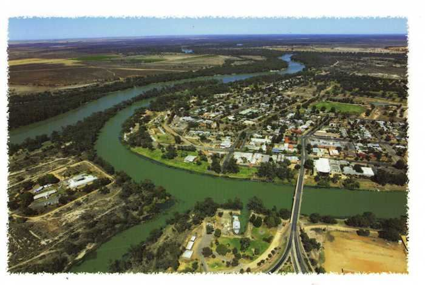
Mildura

Port Lincoln

Around Tarpeena
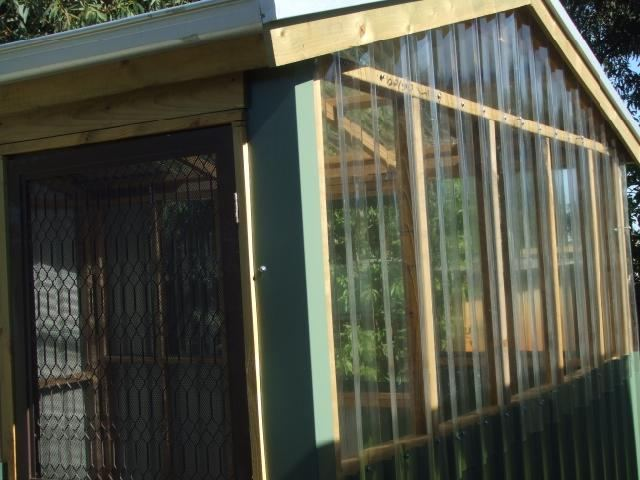
The hot house
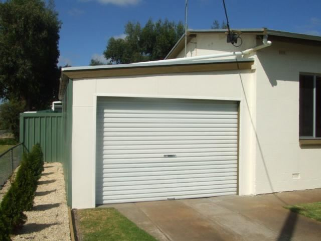
Building the carport enclosure
Home movies
These older Windows Media files download rather than play in the browser; they open in VLC or Windows Media Player.
- The Kids & Banjo (4.8 MB .wmv)
- Eleanor walking (1.0 MB .wmv)
- Julian's bath time (2.7 MB .wmv)
- Archie eating (3.7 MB .wmv)
- Birthday movie (4.6 MB .wmv)
- High-stepping Julian (2.6 MB .wmv)
- Julian sweeping (1.0 MB .wmv)
- Julian's dinner (1.8 MB .wmv)
- Jumping Keenans (6.1 MB .wmv)